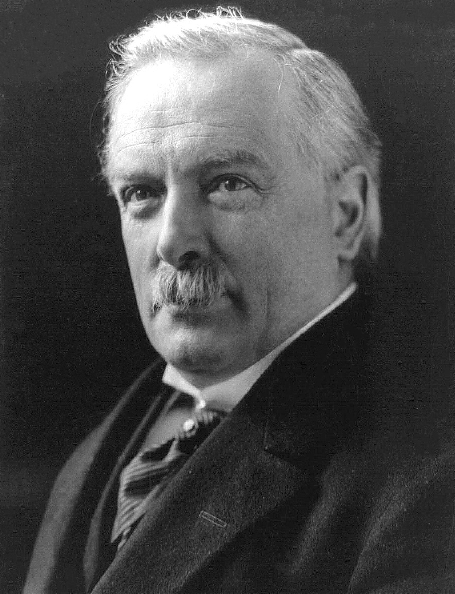
David Lloyd George
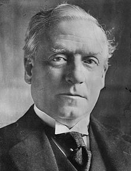
Herbert Henry Asquith
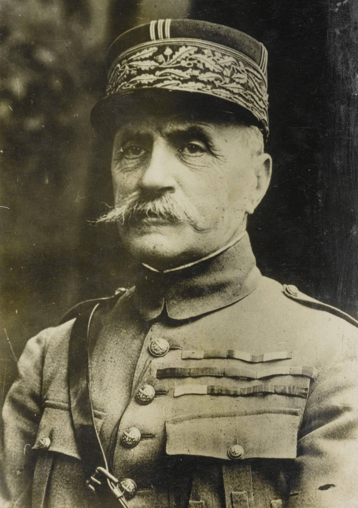
Ferdinand FochJohn J. Pershing
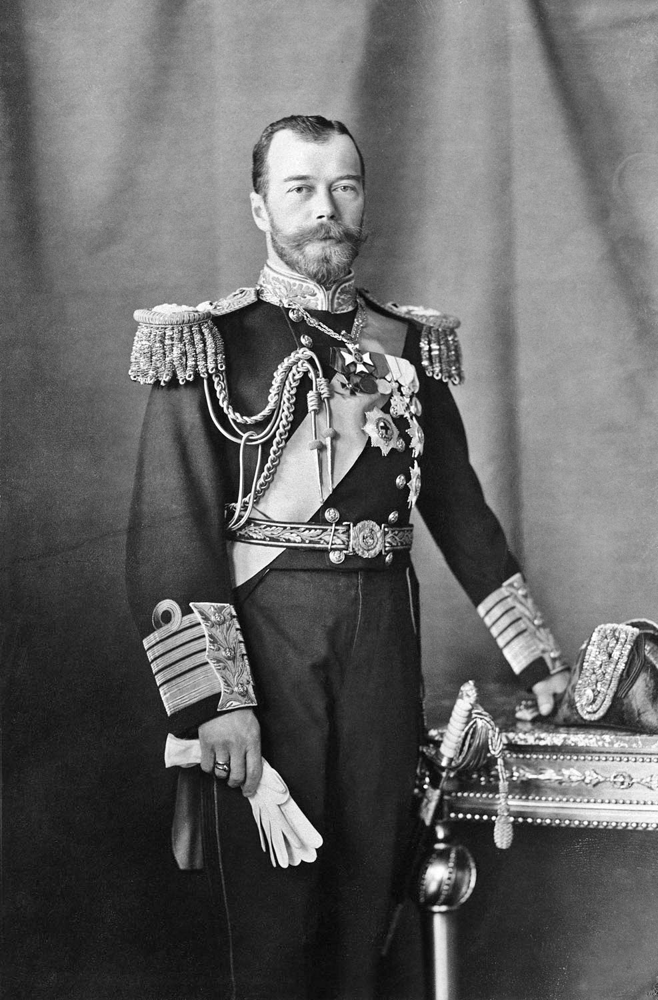
Nicholas II
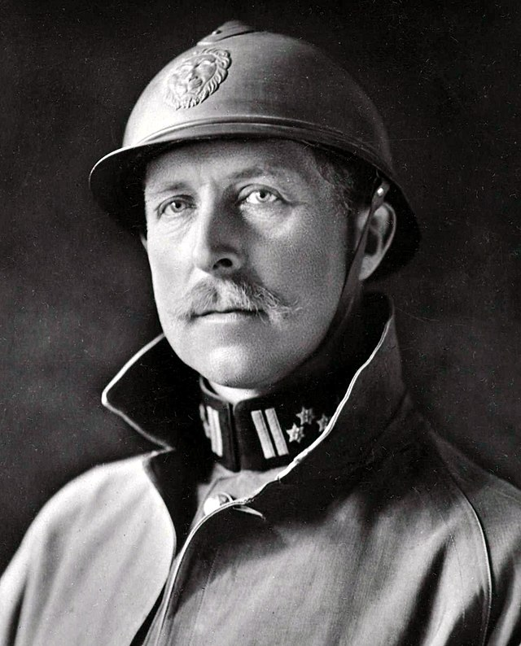
Albert I
World War II Leaders
Georges ClemenceauAdolf Hitler
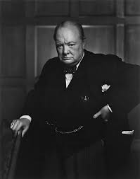
Winston Churchill
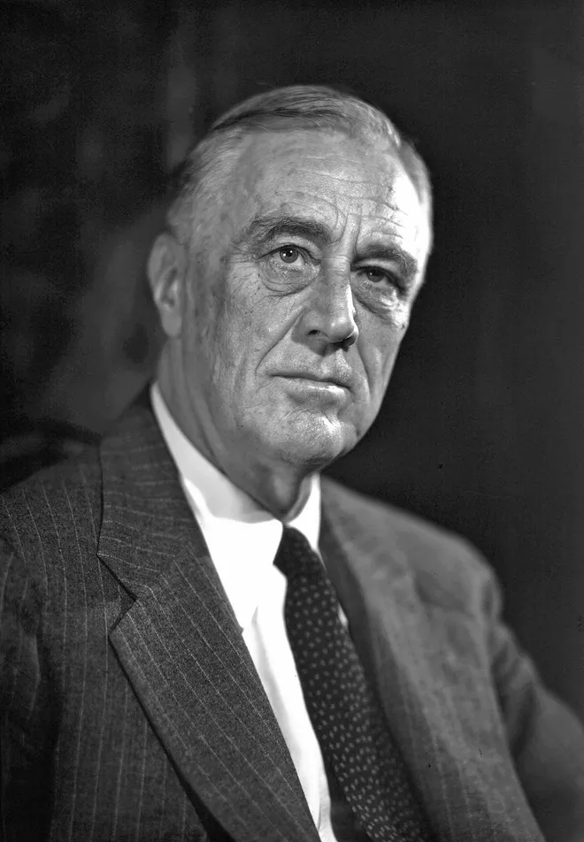
Franklin D. Roosevelt
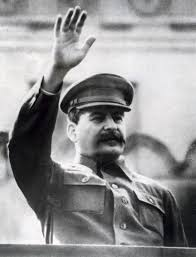
Joseph Stalin
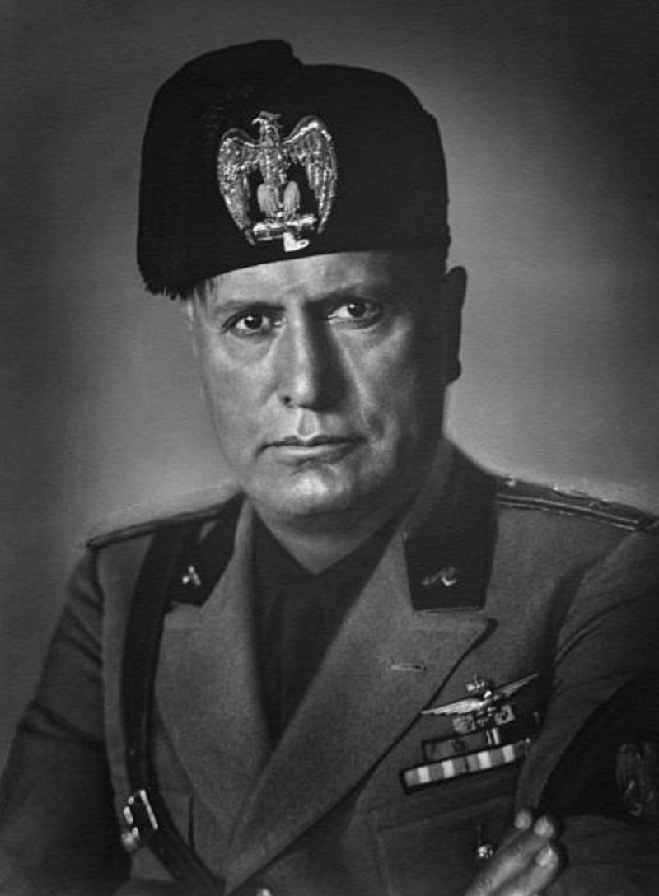
Benito Mussolini
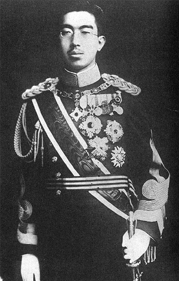
Hirohito
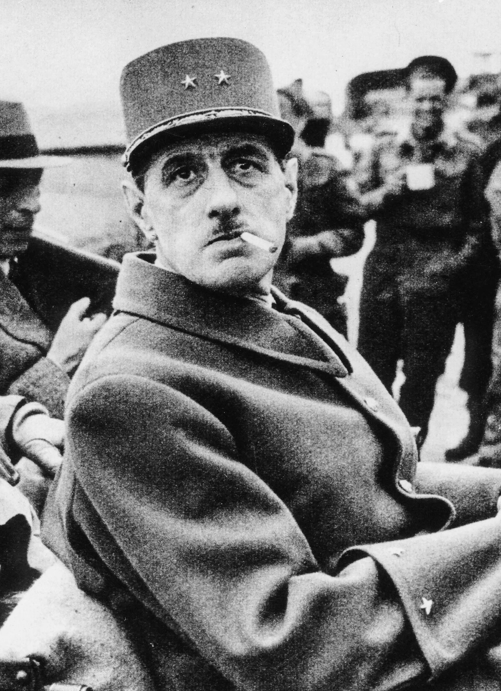
Charles de Gaulle